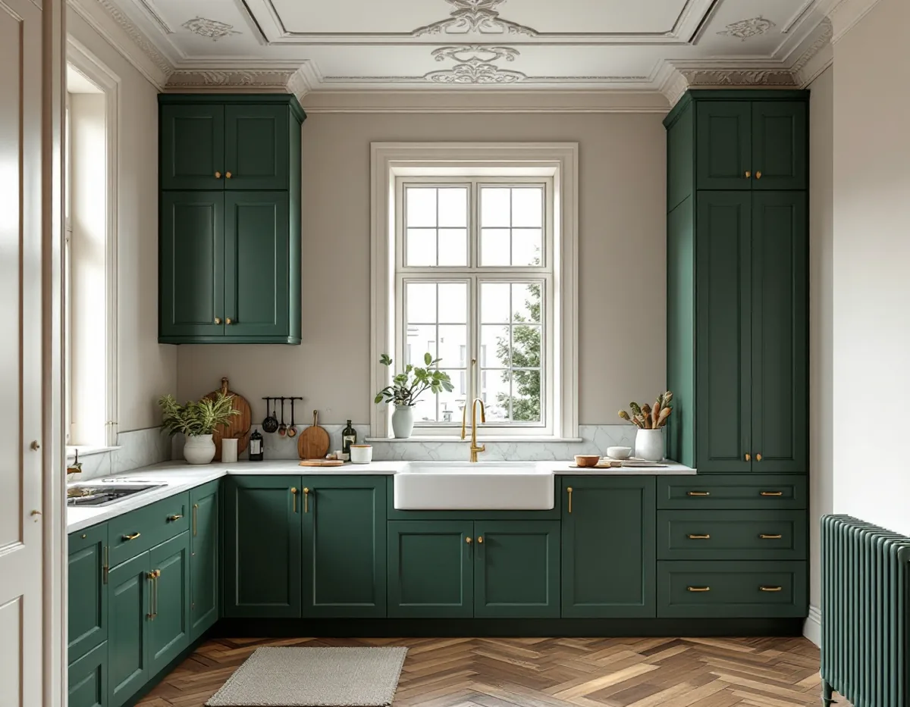
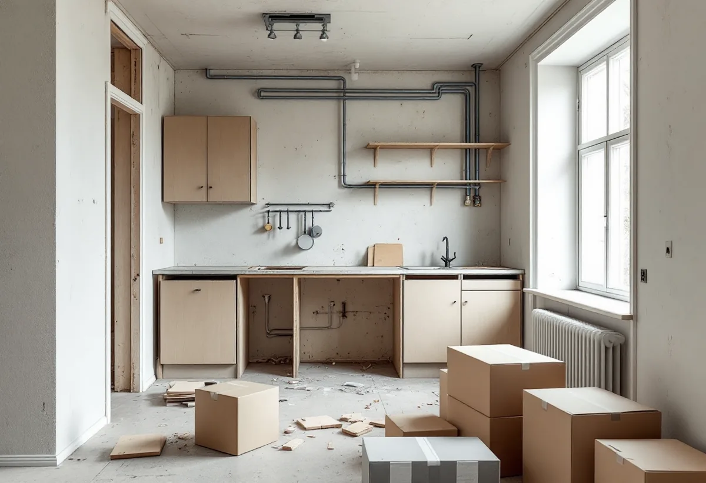

Besök i bostaden
Vi går igenom köket, väggarna, stammarna och vilken ventilation huset har.
De flesta som gör om köket i Solna bor i en bostadsrätt. Då är det föreningen som först ska säga ja, och ibland kommunen. Vi hjälper dig att ta fram en tydlig beskrivning av arbetet, river och bygger nytt och samordnar el och VVS. Bor du i villa i Råsunda eller Stocksundstorp gäller andra frågor, och dem går vi också igenom vid ett gratis besök.

Solna är i första hand en stad av flerbostadshus. Råsunda planerades kring 1907 med flerfamiljshus i kärnan, och jugendhusen längs Råsundavägen byggdes 1910–12. Runt omkring växte villaområden fram på 1920-talet, och i norra Solna har nya stadsradhus byggts i Järvastaden och Nya Ulriksdal.
För köket betyder det två helt olika utgångslägen. I lägenheten styr föreningens stammar, ventilation och stadgar vad som går att göra. I villan bestämmer du själv men ansvarar också för att allt blir rätt – och stora delar av Solnas villabebyggelse är utpekad som kulturhistoriskt värdefull, vilket påverkar ändringar som syns utifrån.

Solna stad skriver till lägenhetsinnehavare att den som bor i en bostadsrätt alltid behöver fastighetsägarens medgivande för byggåtgärder. Att flytta köket kräver föreningens godkännande, och i vissa fall även en anmälan om ändring av vatten och avlopp. Att riva en vägg kräver också föreningens godkännande, och är väggen bärande krävs dessutom en anmälan om ändring av bärande konstruktion.
Bakom detta ligger bostadsrättslagen. Enligt 7 kap. 7 § får du inte utan styrelsens tillstånd göra ingrepp i en bärande konstruktion, installera eller ändra ledningar för avlopp, värme, gas eller vatten eller ändra ventilationen. Styrelsen får bara vägra om åtgärden är till påtaglig skada eller olägenhet för föreningen.
Ju tydligare underlaget är, desto enklare blir beslutet. Vi beskriver vad som rivs, vad som byggs, vilka installationer som berörs och vem som utför dem, så att styrelsen kan ta ställning utan att behöva gissa.
Solna stad räknar avväxling av en bärande vägg och håltagning i ett bärande bjälklag som exempel på åtgärder som kräver anmälan och startbesked. Till anmälan hör bland annat en översiktlig beskrivning, ett förslag till kontrollplan, ett utlåtande från konstruktör och konstruktionsritning. Enligt staden kräver enstaka håltagningar i en bärande lägenhetsvägg inte någon certifierad kontrollansvarig.
Samma sak gäller invändiga ändringar som väsentligt påverkar en anläggning för vatten eller avlopp: anmälan, och sedan vänta på startbesked. Staden meddelar inom tre veckor om handlingar saknas och ska handlägga anmälan inom fyra veckor från att den är komplett. Ligger byggnaden i en kulturhistoriskt utpekad miljö och ändringen påverkar fasaden krävs i stället bygglov.
I ett flerbostadshus är köksfläkten kopplad till husets gemensamma ventilation, och den kontrolleras regelbundet genom obligatorisk ventilationskontroll, OVK. Enligt Solna stad ska flerbostadshus med självdrag eller frånluft besiktas vart sjätte år och hus med från- och tilluft vart tredje år. Det är byggnadens ägare – i bostadsrätt föreningen – som ansvarar för att kontrollen görs och att brister åtgärdas.
En fläkt med egen motor som ansluts till fel typ av system kan alltså bli en anmärkning i nästa protokoll. Fråga styrelsen vilka fläktar som får anslutas innan du väljer modell. I en villa med självdrag eller frånluft krävs ingen återkommande OVK, men ändras ventilationen väsentligt gäller anmälningsplikten ändå.
Villorna i Råsunda villastad, Råsta egnahem och Stocksundstorp ingår i områden som staden pekar ut som kulturhistoriskt värdefulla. Ett nytt köksfönster eller ett fläktgaller på fasaden kan därför behöva bygglov. Mer om husen finns hos takläggare i Solna.
Vi går igenom köket, väggarna, stammarna och vilken ventilation huset har.
Du får en beskrivning av arbetet att lämna till föreningen när du söker tillstånd.
Du får ett skriftligt förslag, och vid behov lämnas anmälan in till staden.
Trapphus och hiss skyddas, och de gamla skåpen rivs och bärs ut.
El och VVS dras, väggar och golv görs klara och den nya köksinredningen monteras.
Allt provas, och du får handlingar att spara och lämna till föreningen.
Rotavdraget är 30 procent av arbetskostnaden, högst 50 000 kronor per person och år och högst 75 000 kronor tillsammans med rut. I bostadsrätt gäller det arbete innanför lägenhetens tak, väggar och golv som du har underhållsansvar för enligt föreningens stadgar. Skatteverket godkänner där bland annat att montera fast köksinredning och installera vitvaror i samband med byggarbetet, att byta köksluckor och att dra elledningar från proppskåpet ut i bostaden.
Rengöring av ventilation och imkanaler ger däremot inget rotavdrag i bostadsrätt, och att färdigställa en nyproducerad lägenhet ger aldrig avdrag. Vi drar avdraget direkt på fakturan.
Den stora skillnaden är om köket byts på samma plats eller flyttas. En flytt, en bärande vägg som ska bort eller nya avlopp lägger till anmälan, konstruktör och mer installationsarbete. I flerbostadshus påverkar också skydd av trapphus och hur materialet kommer upp. Du får ett skriftligt kostnadsförslag efter besöket.
Planering, el, VVS, fläkt och väggar.
Köksrenovering i Stockholm →Takbyte, takbesiktning och plåtarbeten.
Takläggare i Solna →Råsunda, Stocksundstorp och Råsta.
Takrenovering i Solna →Kulturmiljöerna, kartan och lovet.
Attefallshus i Solna →Ritningar, kontrollplan och slutbesked.
Byggföretag i Solna →Radhusen, föreningen och lovet.
Fasadmålning i Solna →Putsade villor och krav på material.
Fasadrenovering i Solna →Råsunda, bygglovet och handlingarna.
Fönsterbyte i Solna →Fönster från 1950-talet, kitt och fogar.
Fönsterrenovering i Solna →Ta fram och slipa trägolvet under mattan.
Golvslipning i Solna →Plåt i Solnas kulturmiljöer.
Plåtslagare i Solna →Gatusidan, gårdssidan och konstruktionen.
Takbyte i Solna →Tapet efter husets ålder och underlag.
Tapetsering i Solna →Kulturmiljöerna och lovet.
Tillbyggnad i Solna →Hela lägenheten, elen inräknad.
Totalrenovering i Solna →